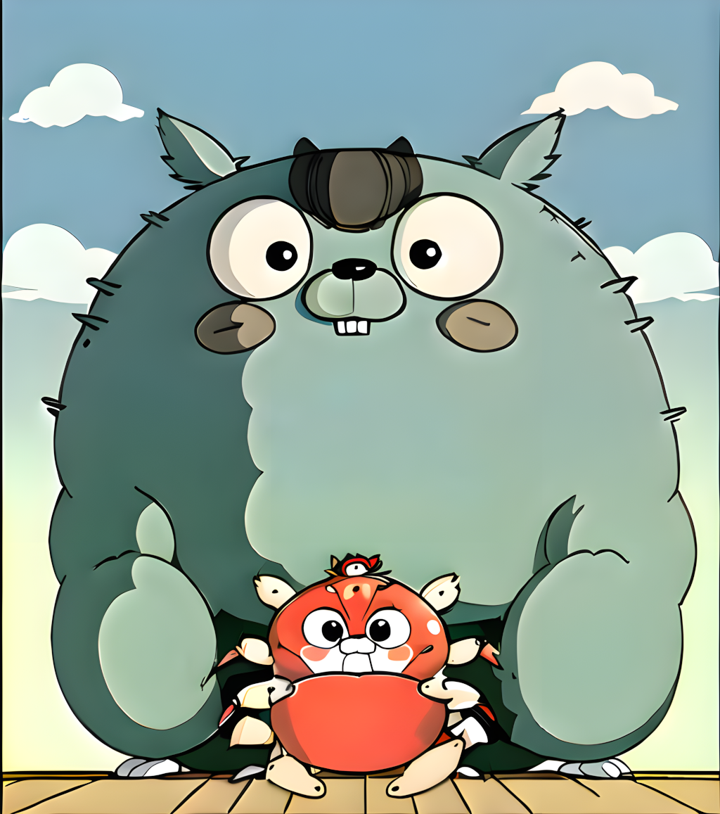
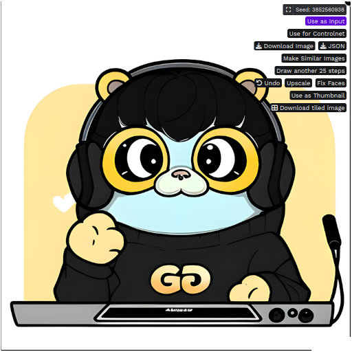
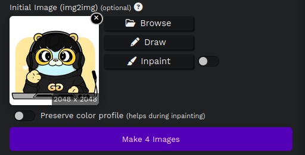
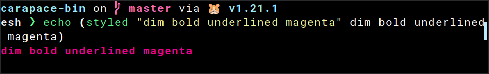
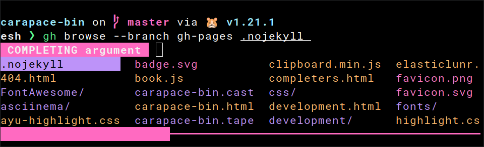

Blog
2023
Go is bigger than crab!
Ever wanted your custom Gopher but didn't have the drawing skills?
Well seems now you can generate them. Type the title into your favorite AI prompt to get this:

Well no. But it's close enough so let's dive in...
What you need
Which is a 1-click install of Stable Diffusion with an alternative web interface. You can choose a different approach but this one is pretty simple and I am new to this stuff.
Make sure you meet the hardware requirements (GPU) and have enough disk space (this is a whopping 20+GB install).
This one does all the magic to ensure the generated image resembles a gopher.
Place it into EasyDiffusion/models/lora/.
By pure chance, I used this model instead of the default one and it gave amazing results.
If you are looking for the classic gopher style use the default (sd-v1-5), but this one is more fun.
Place it into EasyDiffusion/models/stable-diffusion/.
It tends to give the gophers a bit of a teddy bear look though so experiment with the settings (e.g. increase the strength of the golang LoRa to
0.8). And regenerate until you get something that pleases you.
This one is optional but also has some nice effects when adding it into the mix.
Place it into EasyDiffusion/models/lora/.
See What are LoRA models and how to use them in AUTOMATIC1111 for the difference between LoRa and base models.
Example
- sd (top-left)
- sd+gopher (top-right)
- anything+gopher (bottom-left)
- anything+gopher+ghibli (bottom-right)

Settings
Start Easy Diffusion and it should open http://localhost:9000/ in your browser.
Network access
Under Settings you can configure it to allow remote access.
It is NOT SECURED so best to only do this in a safe local environment.

Image
- Seed:
Randomfor new creations. - Number of Images:
4to have some options to choose from. - Model:
AnythingV5Ink_inkor keep the standard model. - Image Size:
512x512is fine for the usual gopher image as we can upscale it later but you can choose a different format. - LoRa:
gophers_v1 [0.5]and optionallyghibli_style_offset [0.5]as well. - Output Format:
png

Images are NOT STORED by default and closing the browser tab causes loss of data. So remember to save the generated
imageandjson. You can do this by highlighting it and clicking the corresponding button. Or download the full set withDownload imagesat the top.
The Prompt
In the Prompt, you can add a comma-separated list of keywords of what you want in the image.
You can also emphasize specific keywords with brackets (e.g. (coffee) or (holding a mug)).
Be sure to add one of golangGopher (recommended), gopherArt, gopherCircle or gopher3d for the gopher model.

Have a look at the Prompt Guide for advanced techniques.
There is also the Negative Prompt where you can define what you don't want in the image.
You may add rust, ferris here, but best to leave this for later when you want to get rid of something specific.
The first attempt
Fill the prompt with golanggopher, <keywords...> and hit Make.
Here's what I got for golanggopher, podcast:

If there is nothing of interest try again. But if one has a nice theme or composition don't start from zero. Highlight the image and click
Make Similar Imagesto use it as input.
In my case, the upper left already looks pretty nice, but there are some issues...
Fixing the teeth
See how there are no teeth? This happens pretty often when they are missing or not right.
Highlight the image and click Use as Input.

If you've done something else in the meantime you should select
Use these settingson the top right first.
Klick Inpaint.

Mask the part to regenerate.

Save it, hit Make and if you're lucky that fixes it.
If it didn't work you can try to add
teethto the prompt. Otherwise set theseedto random and try again.
Fixing the logo
The logo looks okay, but it isn't an O.
It's pretty close though, so mask the part that doesn't fit.

This one worked on the first try.

Upscale
Finally, highlight the image and click Upscale for a higher resolution.
Then highlight it again to save it with Download Image.

So what about the big one above
That is a composition of two generated images.
The big one (golanggopher, studio ghibli, totoro):

The small one (golanggopher, crab):

- By removing the background.
- Placing it over the other image.
- Overpainting parts of the old gopher.
- Importing it in
Easy DiffusionasInput. - Masking the outline for inpainting.
- And letting it regenerate various parts a couple of iterations.
- It ended up as above.

Examples
You can find some examples at https://github.com/rsteube/gopher.
Have fun!
Oh, and give Easy Diffusion a tip if you like it.
Puking Rainbows

Shells support colored output. Some do so also during tab completion.
It can provide extra context like whether an issue is open (green) or closed (red). Or reflect the color of labels:

Here is how this works and how it is done in carapace...
ANSI escape sequences
Text style is set in the shell using an escape sequence like \e[31;42m.
This instructs the terminal that the text following it is red (31) with a green background (41).
It consists of
\eescape.[an opening square bracket.31;42a semicolon-separated list of escape codes.mthe letter m.
A common approach is to restore the default style using \e[0m afterwards.
echo "\e[1;2;4;35mdim bold underlined magenta\e[0m" # you might need `echo -e` for this

There are basic foreground colors (30-37), background colors (40-47), modes (1-9) and reset (0) to restore the default. 256-colors and RGB are also possible.
You can find a full list at ANSI Escape Sequences.
Elvish
This one is easy.
Styled
Elvish provides an abstraction for escape sequences using a list of human-readable keywords.
echo (styled "dim bold underlined magenta" dim bold underlined magenta)

You can read more about this at styled.
Complex candidate
Adding colors to tab completion is thus pretty easy with edit:complex-candidate.
set edit:completion:arg-completer[example] = {|@args|
edit:complex-candidate true &display=(styled true green)' (true in green)'
edit:complex-candidate false &display=(styled false red)' (false in red)'
}

Powershell
This one is a bit tricky.
Backtick
First of all, the escape character is different in Powershell. It uses backtick instead of backslash.
echo "`e[1;2;4;35mdim bold underlined magenta`e[0m"

Completion result
CompletionResult allows escape sequences in the ListItemText to add color.
Function _example_completer {
[CompletionResult]::new("false", "`e[31mfalse`e[0m", [CompletionResultType]::ParameterValue, "false in red")
[CompletionResult]::new("true", "`e[32mtrue`e[0m", [CompletionResultType]::ParameterValue, "true in green")
}
Register-ArgumentCompleter -Native -CommandName 'example' -ScriptBlock (Get-Item "Function:_example_completer").ScriptBlock

By default, it uses tooltips to show the descriptions. But the value by itself often gives no sign of what it represents.
ListItemText
Luckily, we can add the description to the ListItemText ourselves.
Function _example_completer {
[CompletionResult]::new("false", "`e[31mfalse`e[0m (false in red)", [CompletionResultType]::ParameterValue, " ")
[CompletionResult]::new("true", "`e[32mtrue`e[0m (true in green)", [CompletionResultType]::ParameterValue, " ")
}
Register-ArgumentCompleter -Native -CommandName 'example' -ScriptBlock (Get-Item "Function:_example_completer").ScriptBlock

Tooltip must not be empty though, so we need to set it to a single space.
Selection
Fix the highlighting by setting Selection to inverse.
Set-PSReadLineOption -Colors @{ "Selection" = "`e[7m" }

Description
And add some finishing touches to the description.
Function _example_completer {
[CompletionResult]::new("false", "`e[21;22;23;24;25;29m`e[31mfalse`e[21;22;23;24;25;29;39;49m`e[2m `e[2m(false in red)`e[21;22;23;24;25;29;39;49m`e[0m", [CompletionResultType]::ParameterValue, " ")
[CompletionResult]::new("true", "`e[21;22;23;24;25;29m`e[32mtrue`e[21;22;23;24;25;29;39;49m`e[2m `e[2m(true in green)`e[21;22;23;24;25;29;39;49m`e[0m", [CompletionResultType]::ParameterValue, " ")
}
Register-ArgumentCompleter -Native -CommandName 'example' -ScriptBlock (Get-Item "Function:_example_completer").ScriptBlock

Zsh
This one is hard.
Arrangement
First, let's have a look at how Zsh arranges values for tab completion.
- Values without a description are arranged side-by-side.
- Values with a description have it appended in the format
-- descriptionIt is also aligned with other entries. - Values with the same description are also arranged side-by-side in front of the description.

Zstyle
Colors are set using the zstyle list-colors.
With ${curcontext} we can configure it for the current context during tab completion.
zstyle ":completion:${curcontext}:*" list-colors "{...}"
List Colors
It contains a colon-separated list of patterns and formats. Formats are the semicolon-separated escape codes from ANSI escape sequences.
There is a simple and a complex way to specify the patterns.
=pattern=formatto apply one format.=(#b)(pattern1)(pattern2)=format0=format1=format2to apply many formats.
See here for a good explanation.
Pattern
Given the value "true", three patterns are relevant.
=(#b)(true)=0=32Set "true" to green (32).=(#b)(true)([ ]## -- *)=0=32=2Set "true" to green (32) and the description to dim (2).=(#b)(-- *)=0=2Set the description to dim for everything else.
Take this with a grain of salt, but there was an edge case in regards to the arrangement. So it's best to set both the pattern for with and without a description for each value.
Compdef
Putting it all together.
#compdef example
function _example_completion {
zstyle ":completion:${curcontext}:*" list-colors "=(#b)(false)([ ]## -- *)=0=31=2:=(#b)(false)=0=31:=(#b)(true)([ ]## -- *)=0=32=2:=(#b)(true)=0=32:=(#b)(-- *)=0=2"
vals=('true:true in green' 'false:false in red')
_describe 'values' vals
}
compquote '' 2>/dev/null && _example_completion
compdef _example_completion example

Carapace
Now to how carapace simplifies the above.
Style
Styles are adopted from Elvish.
There are colors like style.Red, modes like style.Dim and style.Of to combine them.
Action
They can be set directly with ActionStyledValues and ActionStyledValuesDescribed.
carapace.ActionStyledValues(
"true", style.Green,
"false", style.Red,
)
carapace.ActionStyledValuesDescribed(
"true", "true in green", style.Green,
"false", "false in red", style.Red,
)
Modifier
Or with the modifiers Style, StyleR and StyleF.
carapace.ActionValues(
"1",
"true",
).Style(style.Green)
carapace.ActionValues(
"0",
"false",
).StyleR(&style.Carapace.KeywordNegative)
carapace.ActionValues(
"true",
"false",
"unknown",
).StyleF(func(s string, sc style.Context) string {
switch s {
case "true":
return style.Green
case "false":
return style.Red
default:
return style.Default
}
})
Style functions
The following functions can be passed to StyleF for common highlighting tasks:
- ForPath highlights paths using the
LS_COLORSenvironment variable.

- ForPathExt does the same, but by extension only.

- ForLogLevel highlights log levels.

- ForKeyword highlights common keywords like true and false.

That's all
Enjoy the rainbow!

2022
A pragmatic approach to shell completion
The rise of new shells
One of the biggest improvements to my terminal experience was the switch from Bash to Zsh. The reason for this is the astonishing amount of completions provided by the community. As well as something I didn't know of before: menu completion. A mode where you can cycle through the possible values. But like vim Zsh is quite tough on new users.
Then there was Fish. A shell that is more accessible to new users and thus calls itself friendly. But one major catch: the break from POSIX. This is actually a good thing yet the lack of completions at the time prevented me to make the switch.
Now there is a new generation of shells that allow passing structured data through a pipe. This is a major thing and well worth its own article.
One of these is Elvish, a shell written in Go that runs on Linux, BSDs, macOS, and Windows. It is also the shell that managed to make me switch again.
But let's focus on another of its features: filtering of entries during menu completion. And not just the values but the descriptions as well. You will understand later why this is important.
Elvish only has a few completions though so I am back at the same problem I had with Fish. This time however I've got some tools under my belt.
So let's change that...
Command-line arguments
Arguments passed to your application are just that: simple words. How these are parsed is logically defined by your application. Which is the reason why we have such an inconsistent mess.
So for the sake of simplicity let's concentrate on the more prevalent POSIX (GNU) style.
Here we got shorthand flags -s, longhand flags --long, subcommands, and positional arguments.
Some flags take an argument -a value. Others accept an optional argument directly attached to the flag name --flagname=optionalValue.
You can refer to Anatomy of a shell CLI for a more sophisticated description.
How does shell completion work
The core concept is to split up the current command line (until the current cursor position) into words. Depending on these the completion script returns possible values to replace the current word with.
command --flag1 positionalArg1 "positionalArg2 with space" <TAB>
# ['command', '--flag1', 'positionalArg1', 'positionalArg2 with space', '']
# positionalArg3
# Arg3
# thirdArg
The value to use is either determined by menu selection or filtering until there is only one.
command --flag1 positionalArg1 "positionalArg2 with space" thi<TAB>
# ['command', '--flag1', 'positionalArg1', 'positionalArg2 with space', 'thi']
# thirdArg
What makes shell completion so complicated
The shell does not know the argument structure of your application. So we have to tell it about subcommands, flags, and positional arguments. But few provide a decent framework for this.
Then there are various caveats like special characters not being escaped. These need to be addressed. For each application. For each shell. Over and over again. In a scripting language, you are likely unfamiliar with and is hard to debug.
Completion scripts also tend to get quite large and hard to read.
A different approach to shell completion
One way to avoid writing the completion scripts by hand is to generate them. This is a feature provided by several argument parsers and ensures the scripts are kept in sync with your application. But due to the difficulty of creating a generator, you can expect some issues:
- it supports only a few shells
- it is limited to flags and subcommands
- if there is support for value completion it only completes static values
["fixed", "words"] # static $(command generate values) # dynamic - it only mimics your argument structure and subcommand determination is rather optimistic
- you still end up with large scripts that are hard to debug
- inconsistencies between shells
A different approach is to only use the completion script to pass the words as arguments to your application.
command --flag1 positionalArg1 "positionalArg2 with space" <TAB>
# command complete command --flag1 positionalArg1 "positionalArg2 with space" ''
The argument parser then does what it is meant to do and the application returns the possible values. This has several benefits:
- short scripts that are the same for each application
- easy testing of completion by invoking the application
- argument structure and subcommand determination is exact
- consistent behavior between shells
- completion possibilities that exceed what the shell provides
- adding new shells is quite simple
However, the startup time of the application matters as it affects the overall experience.
Now to the tools...
carapace
carapace is a command argument completion generator based on cobra. It started as a mere fork of #646 with added dynamic completion while waiting for pull requests to be merged. But development regarding this was a bit stale* at the time and it ultimately became a project of its own.
It currently supports consistent dynamic completion for Bash, Elvish, Fish, Ion, Nushell, Oil, Powershell, Tcsh, Xonsh, and Zsh.
(*) Things have changed though and by now cobra has dynamic completion as well. It even took a similar approach so be sure to check that out.
RawValue
RawValue is the internal representation of possible completion values. It contains the actual value to be inserted, a display value to be shown during completion, and a description. It is important to split these as some shells show the description as a tooltip and to keep the display values short.
chown cups:<TAB>
# ['chown', 'cups:']
# {"value": "cups:audio", "display": "audio", "description":, "995"}
# {"value": "cups:root", "display": "root", "description":, "0"}
Action
An Action indicates how to complete a flag or positional argument. It contains either the static RawValues or a function to generate them. Also some metadata like whether a space suffix shall be added. None of this is public though and interaction with it is accomplished purely through functions.
One core function which pretty much all others end up using is ActionValuesDescribed.
ActionValuesDescribed(
"audio", "995",
"root", "0",
)
// {"value": "audio", "display": "audio", "description":, "995"}
// {"value": "root", "display": "root", "description":, "0"}
Reusability
A great aspect of an Action is its reusability. Let's have a closer look at the user:group completion of chown.
It uses ActionMultiParts which implicitly splits the current word (or part of it as these can be nested as well).
The parts themself are completed with ActionUsers and ActionGroups. Here the first one is invoked explicitly to add a : suffix to the inserted values.
// ActionUserGroup completes system user:group separately
// bin:audio
// lp:list
func ActionUserGroup() carapace.Action {
return carapace.ActionMultiParts(":", func(c carapace.Context) carapace.Action {
switch len(c.Parts) {
case 0:
return ActionUsers().Invoke(c).Suffix(":").ToA()
case 1:
return ActionGroups()
default:
return carapace.ActionValues()
}
})
}
Flexibility
The chown command generally takes user:group as first positional argument and files otherwise.
But here's the twist: when the --reference flag is used the first positional argument is also a file.
The benefit of an argument parser is that this can be checked pretty easily.
rootCmd.Flags().String("reference", "", "use RFILE's owner and group rather than specifying OWNER:GROUP values")
carapace.Gen(rootCmd).FlagCompletion(carapace.ActionMap{
"reference": carapace.ActionFiles(), // register flag argument completion
})
carapace.Gen(rootCmd).PositionalCompletion( // register completion for position 1..
carapace.ActionCallback(func(c carapace.Context) carapace.Action {
if rootCmd.Flag("reference").Changed { // check if --reference flag was used
return carapace.ActionFiles()
} else {
return os.ActionUserGroup()
}
}),
)
carapace.Gen(rootCmd).PositionalAnyCompletion(
carapace.ActionFiles(), // complete files for every other position
)
Caching
The more dynamic the completions are the more apparent it becomes that caching is needed. And while GraphQL has proven to be great to keep transferred data minimal and thus delays are small it is good to avoid unnecessary internet roundtrips.
Cache wraps an Action and persists the generated RawValues as json on disk. On the next invocation these are loaded unless the timeout has exceeded.
func ActionIssueLabels(project string) carapace.Action {
return carapace.ActionCallback(func(c carapace.Context) carapace.Action {
// retrieve labels for project
}).Cache(24*time.Hour, cache.String(project))
}
Batch processing
Some Actions consist of several others. And invoking them sequentially can take a considerable amount of time. Batch bundles these so that they can be invoked in parallel using goroutines.
The positional completion for the docker inspect command is such a case.
carapace.Batch(
docker.ActionContainers(),
docker.ActionNetworks(),
docker.ActionNodes().Supress("This node is not a swarm manager"),
docker.ActionRepositoryTags(),
docker.ActionSecrets().Supress("This node is not a swarm manager"),
docker.ActionServices().Supress("This node is not a swarm manager"),
docker.ActionVolumes(),
).ToA()
carapace-bin
What originally was a sandbox for trying out carapace has evolved to carapace-bin. A command argument completer working across multiple shells and for multiple commands. It can be seen as my personal collection of completions baked into a single binary.
One command I am using a lot is the GitHub CLI.
Here, the importance of description filtering mentioned in the beginning becomes obvious.
E.g. the issue number on its own is not very helpful at finding the one you are looking for.
A sample application
Writing tools always felt very limited. While it's quick to create a CLI nowadays, without shell completion it lacks usability. go-jira-cli is a quick take to see what is possible with carapace.
It is a simple Jira terminal client composed of carapace, go-jira, and GitHub CLI. Here, flag completion has a strong dependency on other flag values. Also, notice the initial delay of the component flag which wasn't cached yet.
lazycomplete
Commands are often sourced in shell startup scripts to register the completion.
source <(command completion)
But this is generally discouraged because it slows down the shell startup. Invoking the command is not wrong per se though but rather a symptom of the shell doing this eagerly.
lazycomplete circumvents this problem by registering a temporary completion function that replaces itself on the first <TAB> with the actual one.
The initial delay is thus reduced to a single command invocation.
It is the same concept carapace-bin uses to register all of its completers in mere milliseconds.
source <(lazycomplete \
example 'example _carapace' \
lab 'lab completion' \
)
# _lazycomplete_example() {
# unset -f _lazycomplete_example
# source <(example _carapace)
# $"$(complete -p example | awk '{print $3}')"
# }
# complete -F _lazycomplete_example example
#
# _lazycomplete_lab() {
# unset -f _lazycomplete_lab
# source <(lab completion)
# $"$(complete -p lab | awk '{print $3}')"
# }
# complete -F _lazycomplete_lab lab
Afterword
All this is a limited view of the more easy part of shell completion though. pflag is a flag parser for POSIX so completing commands not adhering to it quickly becomes quite hacky (at least for the moment). But thanks to the high-level abstraction this can be improved without affecting the actual completers too much.
A great benefit is that I can now switch between shells without feeling out of place. Shells become a specialized tool I can use not something I am stuck with. I can open Bash/Zsh when I am copying a POSIX snippet from the internet. Maybe Xonsh for something ML-related. Or Nushell to work with large data.
So while it's certainly not without issues and still has some messy parts it works pretty well for me until someone comes up with a better solution.